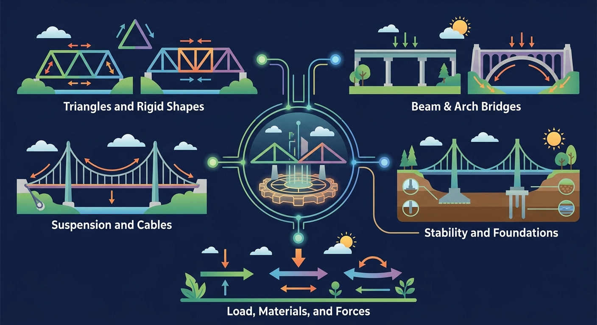
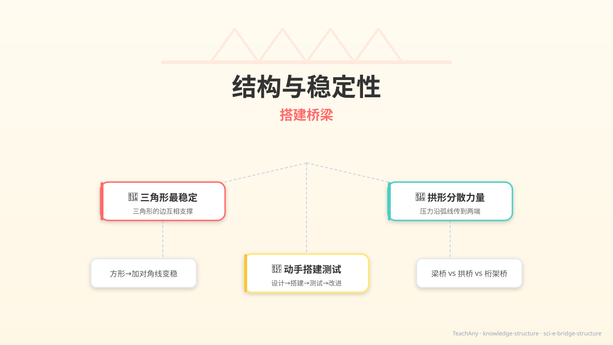
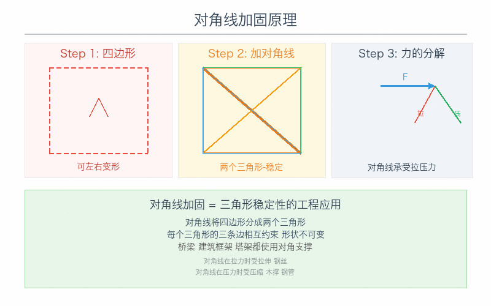
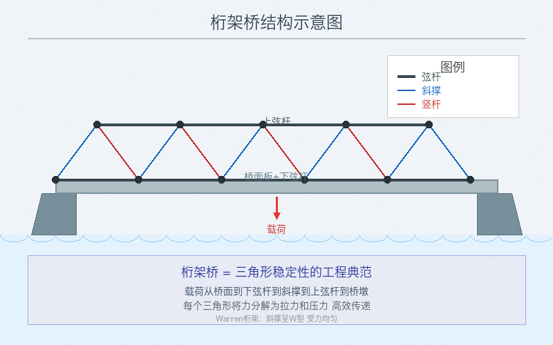
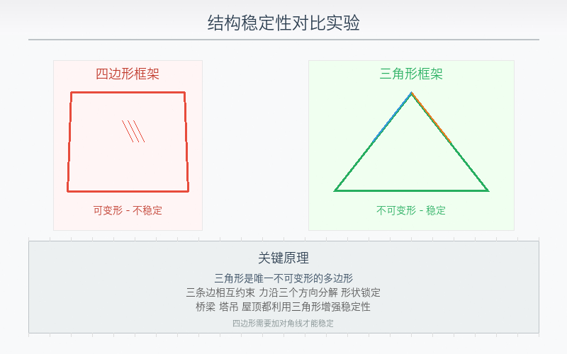

🎯 能说出影响结构稳定性的3个因素
🎯 能判断不同桥梁结构的稳定性差异
🎯 能分析三角形在结构中的力学原理
❓ 为什么纸桥一压就塌？
❓ 三角形真的比四边形更稳吗？
❓ 搭桥时怎么让结构更不容易倒？
学完这一课，这些问题你都能自信地回答。
哪种形状最不容易变形？
提高稳定性错误做法是？
为什么有的桥很稳，有的桥一压就塌？一起来搭建桥梁，发现结构的秘密！

选一个你关心的问题，后面的内容会围绕它展开。
选择或输入后，本课会围绕你的问题展开。
想象用同样多的木棍搭框架，哪种形状搭出来的框架最不容易变形？先凭直觉选一个！
试试看：用三根木棍钉成一个三角形，用力推它的任何一个角——你能推动吗？很难！因为三角形的三条边互相"拉住"，想改变形状，至少要改变一条边的长度。
三条边长度确定后，形状就完全确定了。推不动！✅
四条边长度确定后，形状还能变。一推就歪！❌
💡 关键结论：结构稳定性取决于形状——三角形的边互相限制，无法在不改变边长的情况下变形，所以三角形是最稳定的结构。

点击两个节点之间来添加木棍，搭建你的桥梁，然后点击"测试承重"看看它稳不稳！
观察铁塔、起重机、桥梁的照片，你会发现它们身上全是三角形。为什么工程师要这样做？

点击左下角 💡 按钮，AI 学伴会根据你当前的学习内容，帮你找出卡点、给出最小提示，而不是直接告诉答案。
已经知道：你见过很多桥——拱桥、梁桥、桁架桥，它们长得不一样
但是问题是：为什么有的桥又稳又结实，有的桥却一压就变形？
所以这一段要解决：结构形状和稳定性之间是什么关系？
三条边互相限制，任何一条边都不能独自移动。三角形是最稳定的结构形状。
四条边可以在不改变边长的情况下被推歪成平行四边形。方形不稳定，但加一根对角线就变稳了！
压力沿弧线传到两端，拱形把向下的力分散到两侧。所以拱桥能承受很大的重量。

稳固的结构能承受外力而不易倒塌。降低重心、增大支撑面、使用三角形等稳定形状，都能提高稳定性。桥梁常用桁架（三角形组合）分散力。测试结构时要逐渐加载并观察哪里先变形，从而改进设计。
比较哪个塔更稳：看底面谁更大、重心谁更低。做桥模时优先三角形单元，加载在桥面中部观察挠度。
常见误区：常见误区是只把材料加得很重却不改进形状，结构仍可能不稳或费料。
下列有利于提高物体稳定性的是？
模型桥加入斜杆形成许多三角形后更结实，因为？
观察桥梁模型分解后的基本几何形状
三角形通过力的分散增强稳定性
对比桁架桥与拱桥的承重方式差异
寻找生活中的三角形稳定结构实例
运用稳定性原理设计简易抗震结构
关于结构稳定性的理解正确的是？
用A4纸制作跨度20cm的桥梁，测试不同结构承重能力
先独立作答，再点选项查看对错与错因。
下列哪种桥梁结构稳定性最好？
增加桥梁稳定性的错误方法是？
右图桥梁的桥塔设计主要为了？
桥梁的____结构能有效分解压力，这是赵州桥千年不倒的原因。
答案：拱形
拱形结构通过弧度分散垂直压力
搭建纸桥实验时，通过增加____可以显著提高承重能力。
答案：三角形支撑
三角形具有几何不变性
✅ 稳定性取决于形状与重心位置
💡 混淆材料强度与结构稳定性
✅ 简单三角形单元重复最有效
💡 过度追求结构复杂度
口诀：底大面低三角牢，重心垂线稳不摇
类比：像三脚凳比四脚凳更不容易晃动
💡 PhET：动手探究自然现象，把结论记录到下面的探究区。
如图桁架桥主要运用了（2023北京中考改编）
下列哪项不是稳定结构特征？
设计课桌防震支架应优先考虑？
点击「下一步」逐步观看，或「自动播放」连续演示；图片中会高亮当前步骤的关键部位。
演示支撑面积、重心高度与桥梁最大承重的关系
排列测试桥梁稳定性的正确操作顺序（按住条目上下拖动）
小明用纸搭了一座平直的梁桥，放上两本书就塌了。他想让桥更稳，下面哪个方案最有效？
本节点的前置、后续和同域知识。